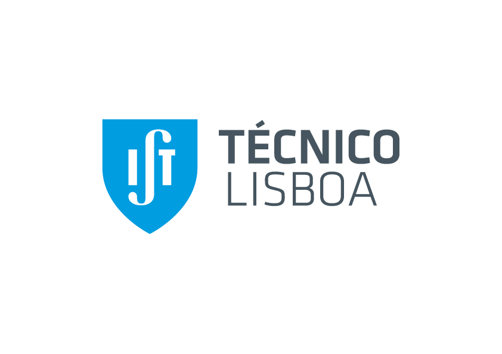

<ion-header>
  <ion-toolbar>
    <ion-buttons slot="start">
      <ion-button (click)="splitPaneMenuService.toggle()">
        <ion-icon name="menu-outline" slot="icon-only"></ion-icon>
      </ion-button>
    </ion-buttons>
    <ion-title>{{ pageTitle }}</ion-title>
    <ion-buttons slot="end">
      <div *ngIf="isDarkMode; else lightMode">
        
      </div>
      <ng-template #lightMode>
        
      </ng-template>
    </ion-buttons>
  </ion-toolbar>
</ion-header>